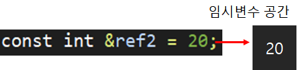

[목차]
#1 참조자의 단점
#2 참조자의 상수 참조
*개인적인 C++ 공부 내용을 정리하는 용도로 작성된 글 이기에 잘못된 내용이 있을 수 있습니다.
#1 참조자의 단점
#5 참조자와 함수 - 참조자가 필요한 이유 포스팅에서 참조자를 이용하면 포인터를 사용하는 것 보다 쉽게 Call-By-Reference 방식 함수를 선언할 수 있다고 공부했다. 하지만 참조자를 사용하는 방식은 단점이 존재한다. 다음 코드를 보고 출력 결과를 예상해보자.
int num1 = 100;
PrintNum1(100);
cout << PrintNum1(100) << endl;
C언어라면 무조건 100이 출력될 것이다. 하지만 C++은 얼마가 출력될 지 예측할 수 없다. 그 이유는 아래처럼 매개 변수가 참조자로 선언 되어 있다면 Num1의 값이 변경될 수 도 있기 때문이다.
void PrintNum1(int &ref) { . . . }
함수의 호출부만 보고 출력 결과를 예상할 수 없다는 것은 매우 불편한 일이다. 코드가 한 줄이라면 단순히 함수의 형태를 확인하면 되겠지만 실제 프로젝트에서는 코드가 몇천 많게는 몇만 줄 까지 늘어나기 때문이다.
그래도 const 키워드를 이용하면 이런 단점을 어느정도 극복할 수는 있다.
void PrintNum1 (const int &ref) { . . . }
이렇게 매개변수 부분의 참조자를 const 키워드로 상수화 해 버리면 함수 내부에서 참조자를 이용한 값 변경이 이루어지지 않음을 예측할 수 있다.
하지만 여전히 포인터 방식에 비해서는 불편한 것은 마찬가지이다. 그래서 참조자를 사용하지 않는 C++ 프로그래머도 다수 존재한다. 따라서, 포인터에 대한 공부도 착실하게 해 두어야 한다.
#2 참조자의 상수 참조
const 키워드는 위의 예시처럼 매개변수의 참조자를 상수화 하는 것 에도 사용할 수 있지만, 한가지 기능이 더 있다. 바로 참조자가 상수를 참조하게 하는 것이다.
그런데 앞 서 #4 참조자(Reference) - 참조자는 변수의 별칭이다. 포스팅 에서 참조자는 변수만 참조가 가능하다 했는데, 어떻게 참조자가 상수를 참조할 수 있는지 의문이 생길 수 있다. 하지만 const 선언에 의해서 만들어진 변수는 평범한 변수와 다르다. const 선언으로 만든 변수를 "상수화된 변수" 라고 부른다.
int &ref1 = 20; // Error - 상수 참조
const int &ref2 = 20; // Ok - 상수화된 변수 참조
const 참조자를 이용해 상수를 참조하는 경우 "임시변수" 라는 것을 생성한다. 그리고 "임시변수"에 상수를 저장하고 참조자가 이를 참조하게 한다.

왜 굳이 임시변수 라는 번거로운 개념을 사용해 참조자가 상수를 참조할 수 있게 하는 것일까? 답은 간단하다. 아래 두 가지 코드를 비교해 보자.
#include <iostream>
using namespace std;
int Add(int &x, int &y)
{
return x + y;
}
int main(){
int temp1 = 10;
int temp2 = 20;
cout << Add(temp1, temp2) << endl;
}#include <iostream>
using namespace std;
int Add(const int &x, const int &y)
{
return x + y;
}
int main(){
cout << Add(10, 20) << endl;
}
단순히 비교해 봐도, 아래 코드가 직관적이고 깔끔해 보인다. 만약 const 키워드를 이용한 참조자의 상수 참조를 막아 두었다면 첫 번째 코드 처럼 매우 비효율 적이게 임시 변수를 따로 생성해서 Add 함수에 보내 주어야 했을 것이다.